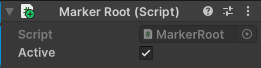
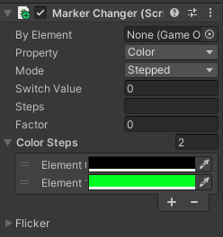
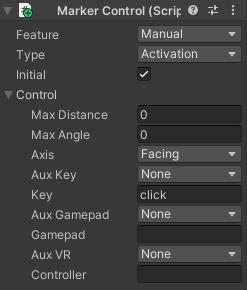

Marker components' workflow
Each marker component in Tames is designed to do a specific task. Usually, you will need several of them added to an object to create your desired interactive effect. Let's go over an example: assume we want a green light that blinks every three second. Below is the process we should follow:
- Interactive root: the first step is to make sure the object containing the light is under the hierarchy of an object with an active Root marker (left image). Otherwise, Tames will ignore it.
- Changing feature: next is to tell Tames what feature of that light should change. We have two options here: a) to make the light's color switch between green and black (off) and b) to have its intensity switch between 0 and 100 (for example). For either, we need to add a Changer marker (middle image). There, we can set the Property as either Color or Intensity and then put the desired steps in their respective places. Because we want a blinking effect, we need to set the Mode as Stepped.
- Controlling the change: the next step is to tell Tames when the change should occur. For this we need to add a Progress marker. We also have two options here a) set the Duration to 6 and Continuity to Cycle (right image), or b) 3 for Duration and Reverse for Continuity. In the first option, the 6-second duration will be divided into two 3-seconds, and they will repeat in a cyclical mode. In the second option, however, we will have two 1.5s steps but because the progress is reversed after finishing each step, the step will be applied again (hence 3s each) from its end to beginning (and vice versa).
|  |
 |
 |
Now we have our light that blinks from green to off every three seconds. We can now add additional settings. For example, we want the light to be on for two seconds and off for four. We can do it by duplicating the off step (either adding another 0 to Steps or another black to Color Steps.
We may also want to be able to switch the blinking on and off by a click. Here we will need to add a Control marker that its Type is set to Activation and Feature to Manual. This means you want to be able to manually activate and deactivate this element. To make the mouse-click as the control, just write "click" in Key field of the marker's Control settings. Please note that you may also need to change Distance, Angle and Axis for more control. See Input Setting for more detail.
